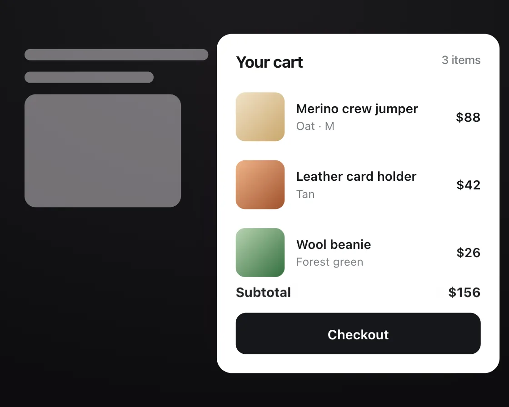

Skeleton shimmer
Skeleton shimmer is a DOM effect: a light sweep says loading, then content fades in. One plain JavaScript file with no dependencies; add it with npx motion-library add skeleton.

Open it live, tune it and copy the code
What is Skeleton shimmer?
Grey placeholder rows hold a cart drawer’s layout under a sweeping light, then real items fade in.
How does Skeleton shimmer work?
Placeholders match the real rows’ sizes, so nothing jumps; each row cross-fades over its own placeholder, 50 ms after the one above.
How do I add Skeleton shimmer to my website?
- In your project folder, run
npx motion-library add skeleton. It writesanimations/skeleton.js. Needs Node 18 or newer. - Import it and call it with a container element that has a size:
import fx from './animations/skeleton.js'; const stop = fx(document.querySelector('#hero')); - Call
stop()to clean up, for example when a component unmounts.
Every setting below is also a flag, so you can install it already tuned: npx motion-library add skeleton --speed 4.
What settings can I tweak?
| Setting | Flag | Default | Range | Step |
|---|---|---|---|---|
| Shimmer speed | --speed | 1.4 | 0.4 to 4 | 0.1 |
Specifications
- Renderer
- DOM (CSS and the Web Animations API)
- Category
- Micro & loading
- Dependencies
- None
- File size
- 5.4 KB, unminified
- Interactive
- No: it plays on its own
- Reduced motion
- Respects prefers-reduced-motion
- Licence
- MIT-0: use it anywhere, no credit needed
Source code
// Skeleton shimmer in a shopping cart drawer: grey shapes the size of the real rows hold the layout while a soft light
// sweeps across them, then each real row fades in over its placeholder, one after another.
// It feels right because nothing jumps when the content lands, and the sweep says "working on it" without a spinner in your face.
const PARAMS = { speed: 1.4 };
export default function (stage) {
const reduce = matchMedia('(prefers-reduced-motion: reduce)').matches;
const W = 540, H = 380;
const dur = (1.6 / PARAMS.speed).toFixed(2);
const rows = [['Merino crew jumper', 'Oat · M', '$88', 'linear-gradient(135deg,#f1e3c8,#c9a66b)'], ['Leather card holder', 'Tan', '$42', 'linear-gradient(135deg,#f0b48a,#a0522d)'], ['Wool beanie', 'Forest green', '$26', 'linear-gradient(135deg,#b7d3b0,#2f6b3a)']];
const root = document.createElement('div');
root.className = 'sk-root';
root.innerHTML = `<style>
.sk-root { position: absolute; inset: 0; overflow: hidden; background: #e9e6ea; font-family: system-ui, -apple-system, "Segoe UI", sans-serif; color: #15171a; }
.sk-scene { position: absolute; left: 0; top: 0; width: ${W}px; height: ${H}px; transform-origin: 0 0; }
.sk-page { position: absolute; inset: 0; padding: 26px; opacity: .5; } .sk-page i { display: block; height: 12px; border-radius: 6px; background: #d4d0d6; margin-bottom: 12px; }
.sk-drawer { position: absolute; right: 10px; top: 10px; bottom: 10px; width: 300px; border-radius: 16px; background: #fff; box-shadow: -16px 0 40px -20px rgba(40,10,30,.35); padding: 20px 20px; box-sizing: border-box; }
.sk-drawer h2 { margin: 0 0 16px; font-size: 17px; font-weight: 700; letter-spacing: -0.02em; display: flex; justify-content: space-between; } .sk-drawer h2 span { font-size: 12.5px; font-weight: 500; color: #7a7f85; }
.sk-row { position: relative; height: 64px; margin-bottom: 8px; }
.sk-row > div { position: absolute; inset: 0; display: grid; grid-template-columns: 52px 1fr auto; gap: 12px; align-items: center; }
.sk-b { border-radius: 6px; background: linear-gradient(90deg, #eceef1 0%, #eceef1 40%, #f8f9fa 50%, #eceef1 60%, #eceef1 100%); background-size: 300% 100%; animation: ${reduce ? `sk-pulse ${dur * 2}s ease-in-out infinite alternate` : `sk-sh ${dur}s linear infinite`}; }
@keyframes sk-pulse { to { opacity: .55; } }
@keyframes sk-sh { from { background-position: 100% 0; } to { background-position: 0 0; } }
.sk-th { width: 52px; height: 52px; border-radius: 10px; }
.sk-real { opacity: 0; } .sk-real b { display: block; font-size: 13.5px; font-weight: 600; } .sk-real small { font-size: 12px; color: #7a7f85; } .sk-real em { font-style: normal; font-weight: 600; font-size: 13.5px; }
.sk-foot { position: absolute; left: 20px; right: 20px; bottom: 20px; }
.sk-sum { position: relative; height: 22px; margin-bottom: 12px; } .sk-sum > * { position: absolute; inset: 0; display: flex; justify-content: space-between; align-items: center; font-size: 14px; font-weight: 700; }
.sk-go { height: 44px; border-radius: 11px; background: #15171a; color: #fff; display: grid; place-items: center; font-size: 14px; font-weight: 650; }
</style><div class="sk-scene">
<div class="sk-page"><i style="width:40%"></i><i style="width:28%"></i><i style="width:34%;height:120px;border-radius:12px"></i></div>
<div class="sk-drawer"><h2>Your cart <span>3 items</span></h2>
${rows.map(([n, v, p, bg]) => `<div class="sk-row"><div class="sk-skel"><div class="sk-b sk-th"></div><div style="display:grid;gap:7px"><div class="sk-b" style="height:11px;width:80%"></div><div class="sk-b" style="height:9px;width:45%"></div></div><div class="sk-b" style="height:11px;width:36px"></div></div><div class="sk-real"><i class="sk-th" style="background:${bg}"></i><div><b>${n}</b><small>${v}</small></div><em>${p}</em></div></div>`).join('')}
<div class="sk-foot"><div class="sk-sum"><div class="sk-skel"><div class="sk-b" style="height:12px;width:70px"></div><div class="sk-b" style="height:12px;width:50px"></div></div><div class="sk-real">Subtotal<span>$156</span></div></div><div class="sk-go">Checkout</div></div>
</div>
</div>`;
stage.append(root);
const scene = root.querySelector('.sk-scene');
const fit = () => { const w = stage.clientWidth, h = stage.clientHeight, s = Math.min(w / W, h / H, 1.3); scene.style.transform = `translate(${(w - W * s) / 2}px, ${(h - H * s) / 2}px) scale(${s})`; };
const ro = new ResizeObserver(fit); ro.observe(stage); fit();
const pairs = [...root.querySelectorAll('.sk-row, .sk-sum')].map(r => [r.querySelector('.sk-skel'), r.querySelector('.sk-real')]);
const anims = new Set();
let loaded = false;
const swap = () => {
loaded = !loaded;
pairs.forEach(([skel, real], i) => {
// arriving content staggers in 50 ms apart; going back to loading is one quiet beat
const o = { duration: loaded ? 300 : 200, delay: loaded ? i * 50 : 0, easing: 'cubic-bezier(0.23, 1, 0.32, 1)', fill: 'forwards' };
anims.add(real.animate([{ opacity: loaded ? 0 : 1, transform: `translateY(${loaded && !reduce ? 4 : 0}px)` }, { opacity: loaded ? 1 : 0, transform: 'none' }], o));
anims.add(skel.animate([{ opacity: loaded ? 1 : 0 }, { opacity: loaded ? 0 : 1 }], o));
});
};
let t1 = setTimeout(function tick() { swap(); t1 = setTimeout(tick, loaded ? 2600 : 2200); }, 2200);
return () => { clearTimeout(t1); anims.forEach(a => a.cancel()); ro.disconnect(); root.remove(); };
}